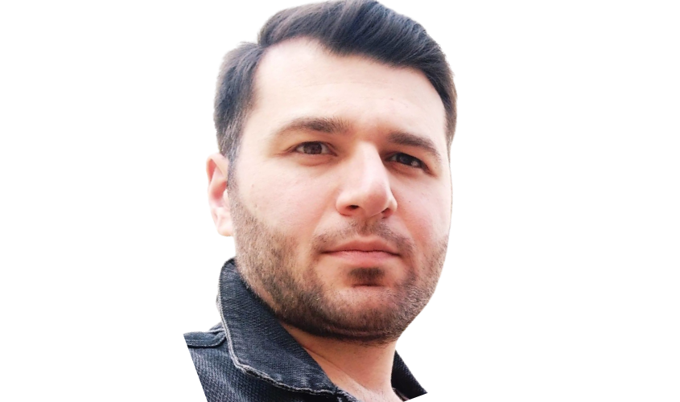

Tornike Gvishiani

Summary
I'm hardworking and dedicated individual in Network/System Engineering
Education
- Bachalor of Information Technology at Akaki Tsereteli State University
Traning Course
- CCNA at Cisco Networking Academy
- CCNA Security 210-260 at Cisco Networking Academy
- Windows Server 2012 R2 70-410 at Grena
- Linux Professional Institute Certification
Work Experience
IT Specialist
- at Smart Finance 03/2015 - 11/2017
IT Manager
- at smart Finance 11/2017 - 04/2023
IT Coordinator
- at Kutaisi International Airport 11/2017 - present
Skills
- Windows Server 2012 R2 (AD, DHCP, DNS, Hyper-V)
- Windows 7/8/10/11
- Linux (UBUNTU Desktop/Server, CentOS/RHEL)
- Cisco IOS (Vlan, VTP, STP, EIGRP, OSPF, VPN)
- Cisco ASA
- Cisco CUCM
- Kerio Control
- Fortinet
- Aruba
- VMware ESXI
- Bash
- Python
- Postfix
- MySQL
- Git/GitHub
- FreePBX